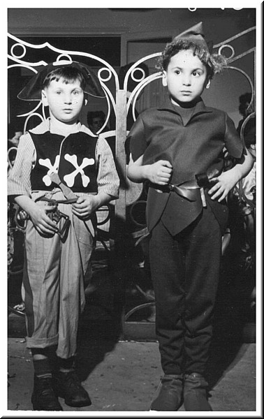

| Image 1 of 41 |
Claude and Jean-Louis Tancerman at the Goldmans' Mardi-Gras party, 1954 (as it happens, the Goldman boys both rose to public attention: Pierre as an anarchist, author of "Dark Memories of a French Jew", and shot by police in the 80's, Jean-Jacques as a popular and internationally acclaimed songwriter)
